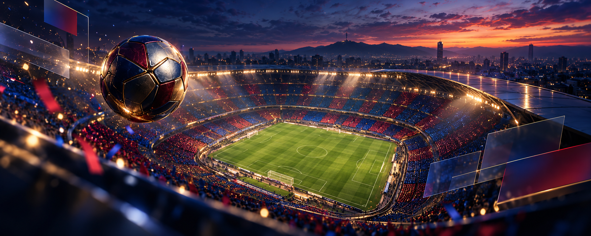
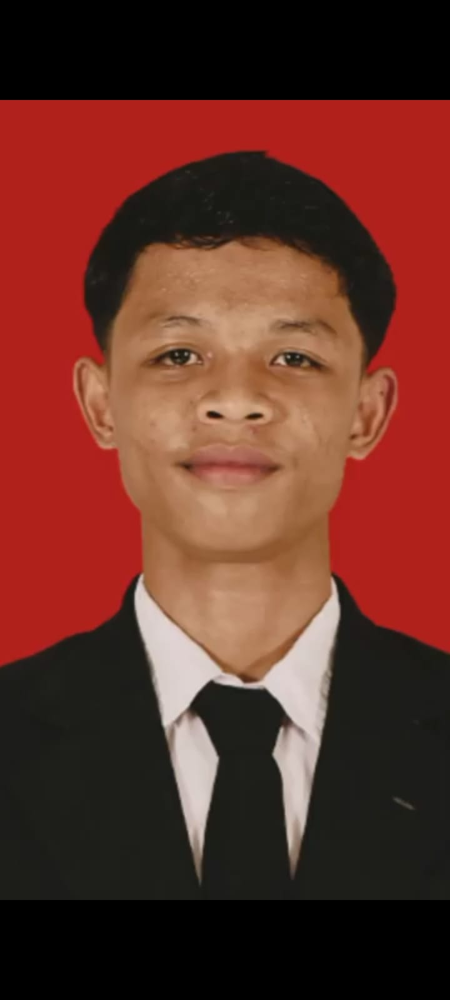

Front-End Development
Membangun website responsif dan interaktif dengan struktur yang rapi.
- HTML semantik
- CSS responsif
- JavaScript dasar
 HI.
HI.
IT student portfolio
Makassar · Indonesia
© 2026
IT · Web · Creative Technology
Membangun solusi digital—
dari kode sampai visual.
Tentang saya
Halo, saya Heldi Irwansah, seorang pelajar di bidang teknologi informasi yang tertarik pada pengembangan web, desain antarmuka, dan pemecahan masalah teknis.
Saya senang mempelajari bagaimana sebuah sistem bekerja, merancang tampilan yang mudah digunakan, lalu mengubah ide menjadi produk digital yang dapat dicoba langsung.
Lihat bidang yang saya kuasai ↘Bidang & keahlian
Kemampuan yang saya kembangkan melalui latihan, eksplorasi mandiri, dan proyek personal.
Membangun website responsif dan interaktif dengan struktur yang rapi.
Merancang antarmuka yang jelas, konsisten, dan nyaman digunakan.
Mengolah foto, poster, dan konten visual untuk kebutuhan digital.
Menangani kebutuhan teknis dasar komputer dan konektivitas.
Proyek pilihan
Contoh proyek personal yang menunjukkan proses belajar dan penerapan kemampuan IT saya.
Website responsif dengan desain 3D, animasi scroll, pemutar audio, dan interaksi before–after.
Transformasi foto menjadi karakter guardian dengan identitas wajah tetap dipertahankan.
Komposisi stadion, warna klub, parallax hero, dan pemutar anthem dalam satu pengalaman web.

Bukan sekadar klub favorit—tetapi energi visual yang menjadi bagian dari identitas portofolio.
Creative technology
Sebuah studi transformasi visual: mempertahankan identitas wajah, lalu membangun ulang karakter melalui armor, warna, cahaya, dan atmosfer.

Wajah, ekspresi, dan karakter personal tetap dipertahankan.
Armor tank biru–emas dengan siluet ksatria pelindung.
Cinematic, heroik, kuat, namun tetap terasa personal.
Pengingat & prinsip
Ketika proses terasa sulit, ayat ini mengingatkan saya untuk tetap belajar, berusaha, dan percaya bahwa kemudahan selalu menyertai kesulitan.
QS. ASY-SYARḤ · 94:5–6
فَاِنَّ مَعَ الْعُسْرِ يُسْرًاۙ
Fa'inna ma‘al-‘usri yusrā(n).
“Maka, sesungguhnya beserta kesulitan ada kemudahan.”
اِنَّ مَعَ الْعُسْرِ يُسْرًاۗ
Inna ma‘al-‘usri yusrā(n).
“Sesungguhnya beserta kesulitan ada kemudahan.”
SULIT BUKAN BERARTI BERHENTI. TERUS BELAJAR, TERUS BERTUMBUH.
Based in Indonesia
Profil
Saya adalah pelajar IT yang terus mengembangkan kemampuan teknis dan kreatif. Saya terbiasa belajar melalui praktik, mencoba solusi, menemukan kesalahan, lalu memperbaikinya.
Mari terhubung
Terbuka untuk belajar bersama, mengembangkan proyek web, atau berdiskusi tentang teknologi dan desain digital.